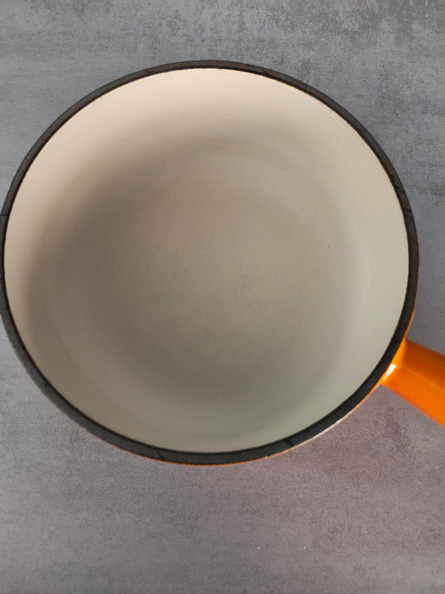
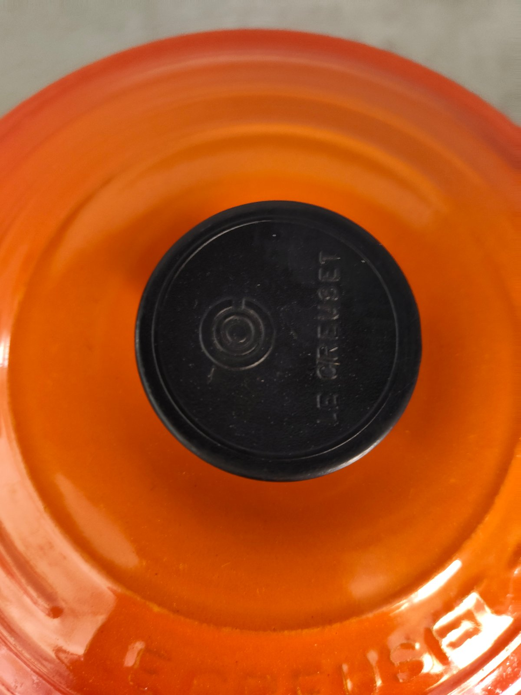
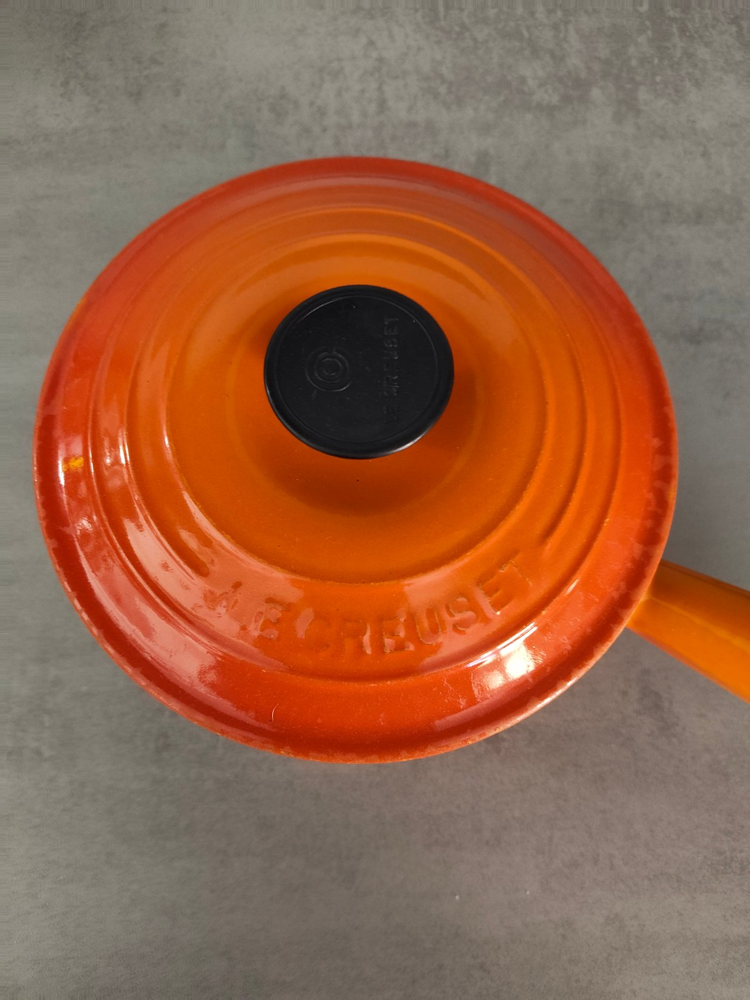

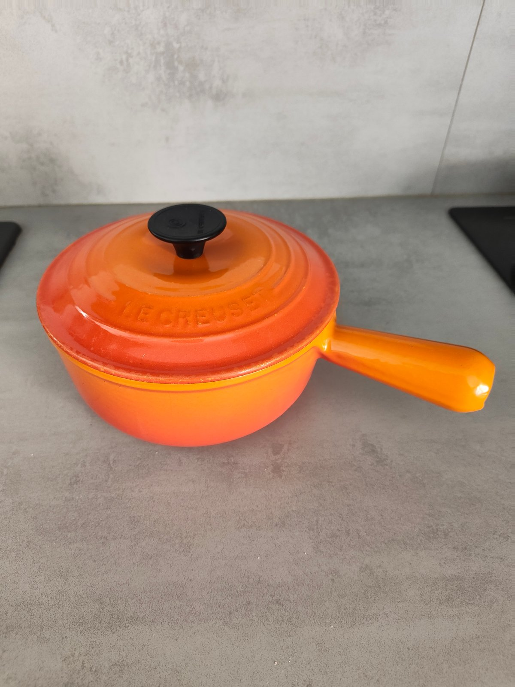
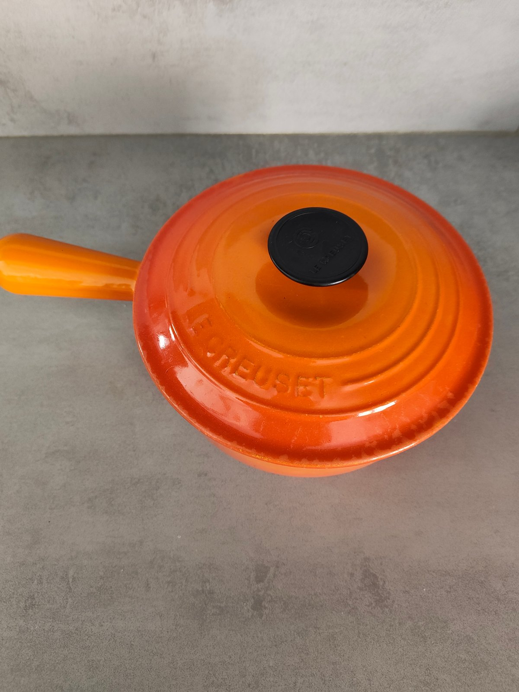
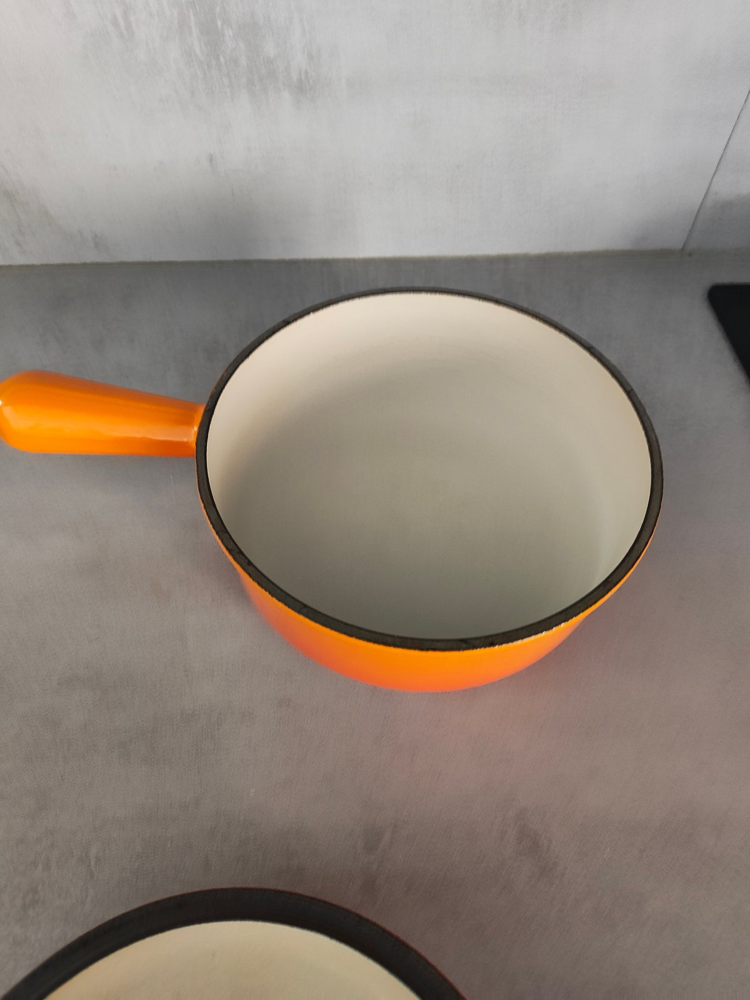
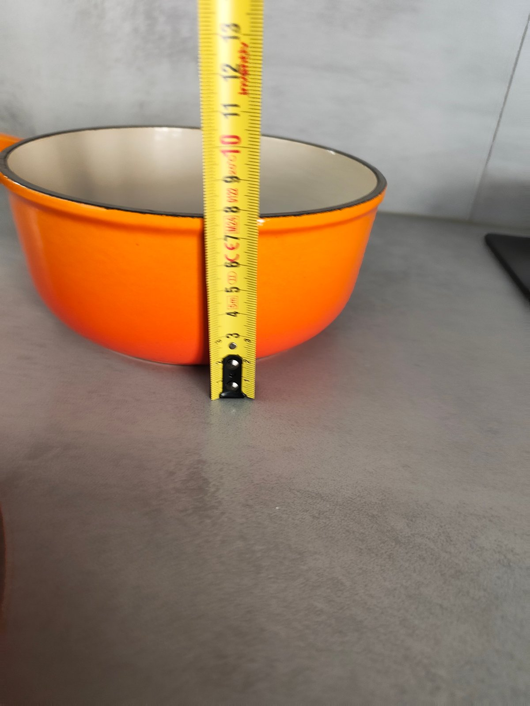
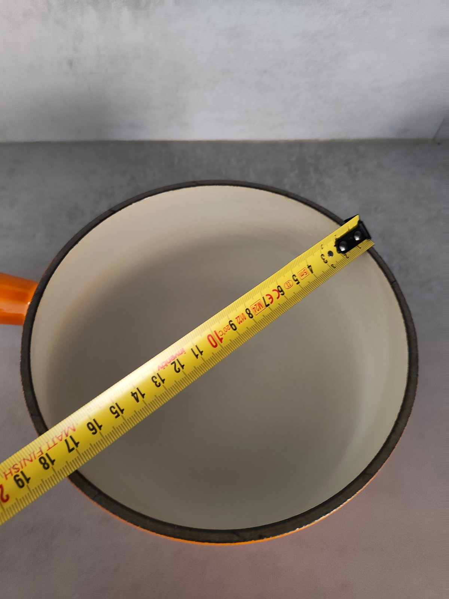
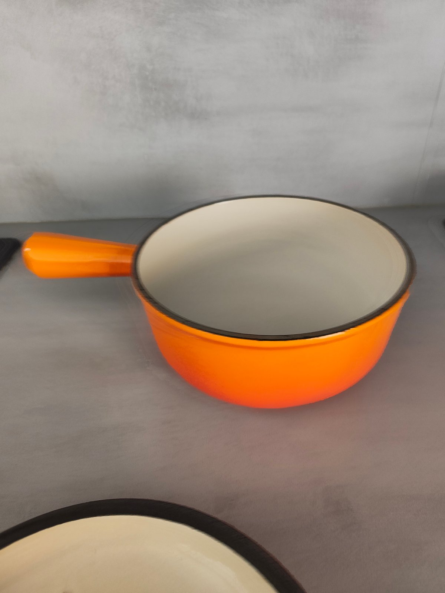
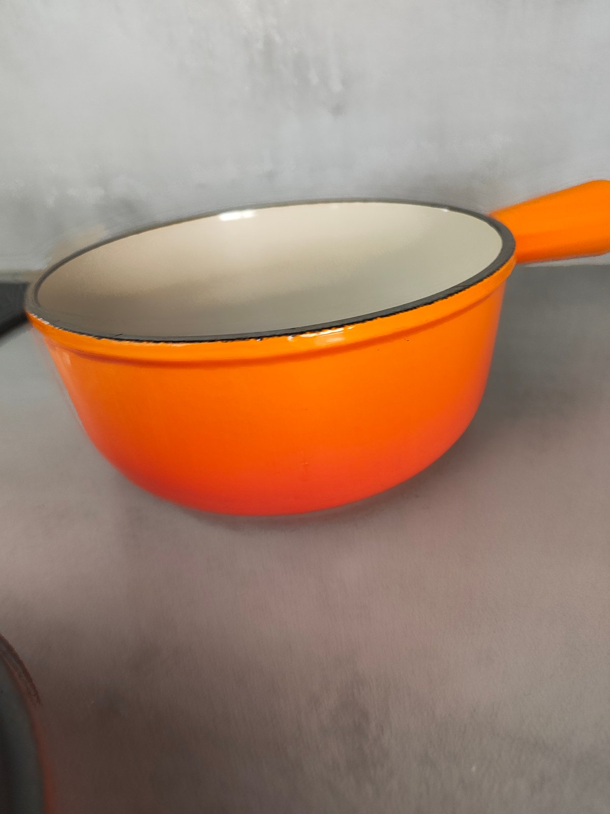
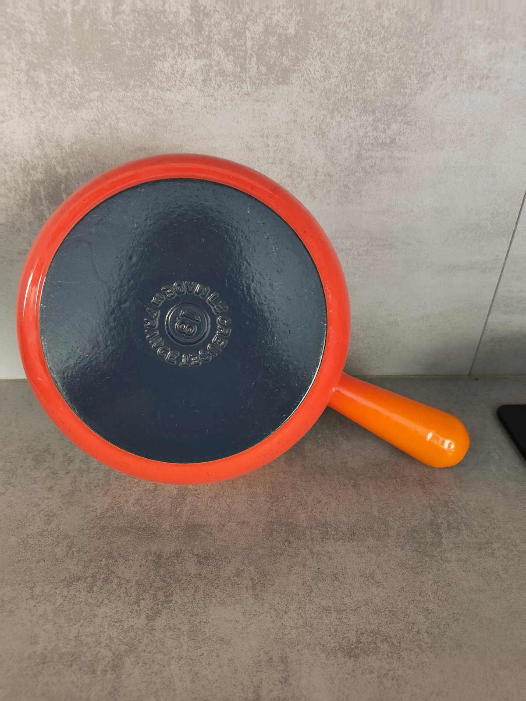
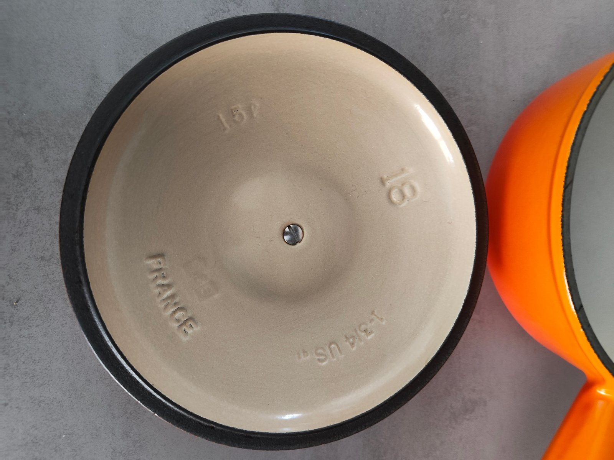
Le Creuset – Cast Iron Casserole with Lid – Model No. 18 – Vintage – Induction Compatible
45€
No online payment: we reply personally to confirm availability, shipping and payment.
Beautiful vintage casserole with matching lid by Le Creuset, model No. 18, made from high-quality enameled cast iron. A timeless and elegant French piece, combining durability, performance, and classic design. Thanks to its thick cast iron construction, it provides even heat distribution and gentle cooking, helping preserve the natural aromas and flavors of food. This versatile cookware is suitable for all types of heat sources, including gas and induction hobs, making it a highly practical everyday cooking piece. Cast iron is also an eco-friendly material: 100% recyclable, it ensures long-lasting use and excellent energy efficiency over time. Like all vintage items, this piece shows its age, charm, and natural patina, with possible signs of use consistent with time. Please carefully review all photos, as they form an essential part of the description and accurately show the item’s condition. Brand: Le Creuset Model: No. 18 Material: enameled cast iron Includes: casserole + lid Compatibility: all hobs, including induction Condition: vintage, with signs of age and use (see photos) Perfect for slow cooking, stews, roasts, soups, and a wide variety of homemade dishes.[](url)
You may also like

Poêlon Le Creuset
50€
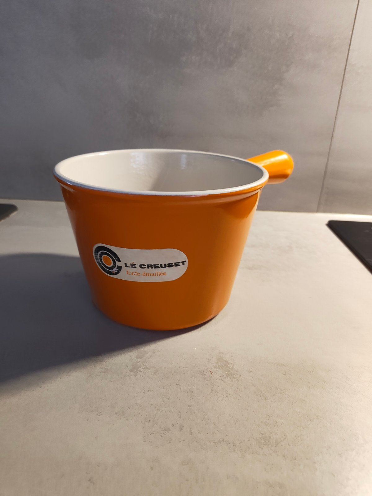
Vintage Le Creuset Cast Iron Saucepan – Orange – New / Never Used – Made in France
60€

Vintage Le Creuset Enamel Saucepan – Rare Floral Daisy Pattern – French Cast Iron – 1970s Retro Kitchen
50€

Vintage Le Creuset Enzo Mari Saucepan / Casserole – Rare Design – Made in France
65€